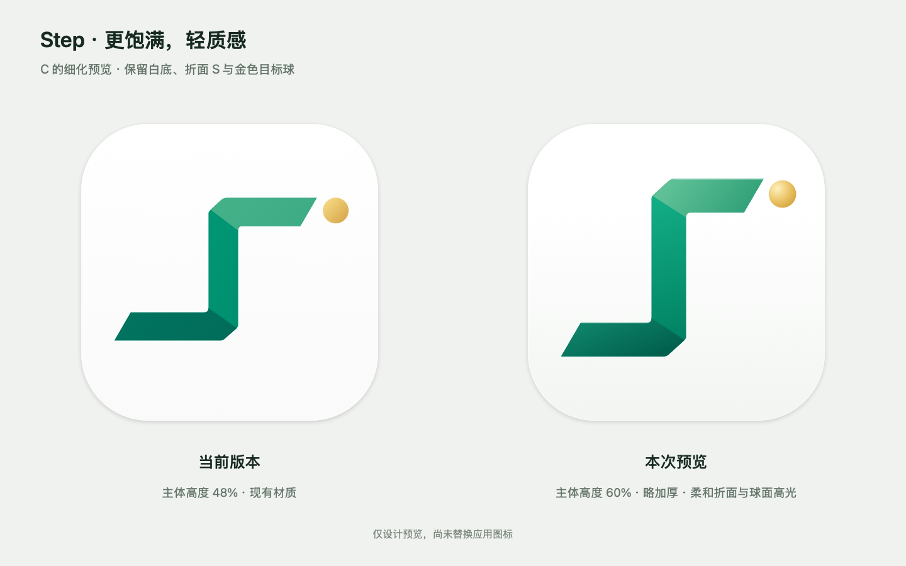
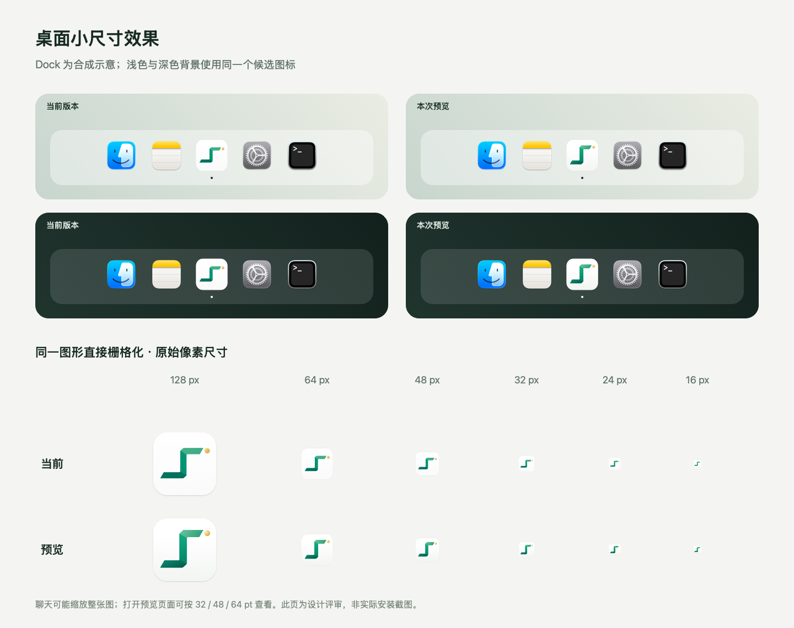

STEP / C REFINEMENT / 2026.11.06
更饱满，轻质感
白底、折面 S 与金色目标球。仅供评审，尚未替换应用图标。
纵向占比 48% → 60%路径略微加厚柔和折面与球面高光

与当前版本对照

桌面环境示意
同一个图标在明暗背景下的效果。以下是合成示意，并非实际安装后的桌面截图。

按桌面显示尺寸查看
以下图标按标注 CSS 尺寸展示，使用 2 倍像素图片。请将页面缩放设为 100%；不同屏幕的物理尺寸会有差异。




确认本稿后才会制作平台资源与验证 Android 裁切、菜单栏单色效果。本轮未修改安装包或应用资源。